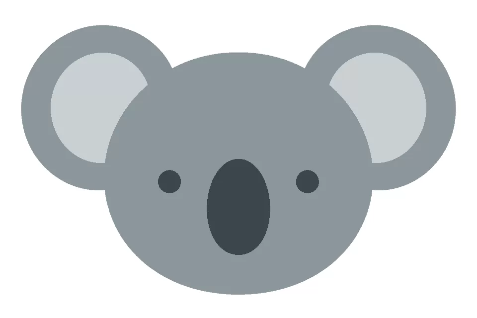
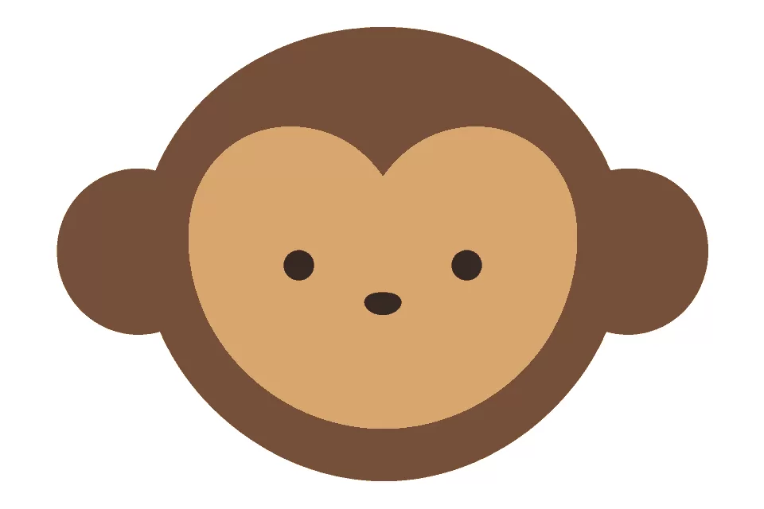
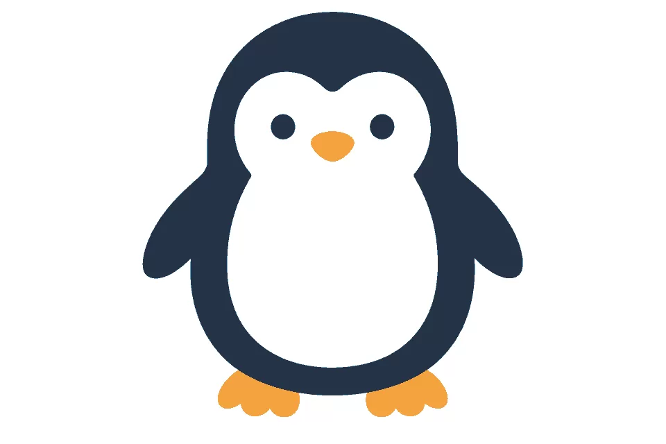

結果を、5つの角度から。
かたち・そっくり度・色づかい・描き込み・バランス。レーダーチャートで自分の一枚を振り返れます。
採点はお手本との画像比較です。絵の上手さそのものを判定するものではありません。
30秒で、
どこまでそっくり？
お手本を見て、指で描いて。
限られた色と時間で、ベストスコアに挑戦する
お絵描きゲーム。
iOS 17以降のiPhone向け · インターネット接続が必要


アプリに収録するお題イラスト
難しい操作はいりません。お手本はプレイ中も見られます。
気になるイラストを選んで、チャレンジスタート。
お題ごとの1〜4色で描こう。太さ変更や消しゴムも使えます。
時間切れで自動採点。100点満点のスコアとチャートで振り返ろう。
横にスワイプして、実際のゲーム画面をご覧いただけます。


同じお題にもう一度挑戦して、自分のベストを更新。



アプリのアップデートでお題を追加します。
最新版が公開され次第アップデートをしてください。
かたち・そっくり度・色づかい・描き込み・バランス。レーダーチャートで自分の一枚を振り返れます。
採点はお手本との画像比較です。絵の上手さそのものを判定するものではありません。
お題ごとの順位と上位作品をチェック。毎日再集計されるメダルのポイントで、ユーザーランキングにも挑戦できます。
描いた枚数、お題の種類、メダルの達成状況に応じて実績を解除。集めた称号をプロフィールに設定しよう。
履歴からスケッチを振り返り、絵だけを保存。スコアとチャート付きの画像でSNS共有も楽しめます。BGMは4曲から選べます。
はい。お手本を見ながら描くシンプルなゲームです。思い通りにならなかった一枚も楽しみながら、自分のベストを目指してください。
チャレンジの開始、正式採点、ランキングなどにはインターネット接続が必要です。お手本の画像はアプリ内に収録します。
毎日0:00（日本時間）の再集計で、参加人数と順位に応じて付与されます。参加人数が少ない間は銅のみ、増えると銀・金も対象になります。現在のメダルが減っても、解除済みの称号は残ります。
アプリ内にバナー広告を表示します。
作品の公開・利用条件は利用規約、データの取り扱いはプライバシーポリシーをご確認ください。データ引き継ぎは現在準備中です。
App Storeでの公開に向けて準備しています。
2026年10月16日 リリース予定アプリについてのお問い合わせ
yotalab.tech@gmail.com ↗